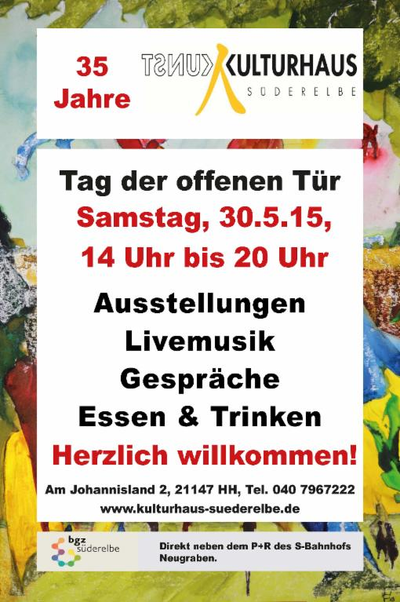

Am Samstag, den 30. Mai, veranstaltet das Kulturhaus Süderelbe ab 14 Uhr seinen jährlichen "Tag der offenen Tür" mit Ausstellungen von Kursleitern und KursteilnehmerInnen aus dem Bereich bildende Kunst.
Die Trommelgruppe des Kulturhauses eröffnet mit Robert Laryea um 14 Uhr den Tag, Bettina Sehlbach und Dimitar Georgiev haben ihren gemeinsamen Auftritt an Klavier und Saxophon, und unsere alten Freunde und langjährigen Begleiter durch unsere Sommerfeste, die "Geilen Partyvirtuosen" mit Kai Lüdemann am Bass und Claudia Lüdefrau am Saxophon, spielen auf!
Wie es sich für ein Kunst- und Kulturhaus gehört, können sich natürlich auch spontane Sessions der Musiker ergeben, bei denen dann auch der Gitarre- und Basslehrer Peter Karliczek dabei ist.
Das leibliche Wohl unserer Gäste liegt dem Kulturhaus-Team traditionell am Herzen: Es werden wieder Kaffee, Kuchen, Grill und Getränke angeboten. Mit den Kuchenspenden finanziert der Verein die Musikauftritte.
Wir freuen uns auf zahlreiche Gäste, die als Freunde und Bekannte von KursteilnehmerInnen, als Kolleginnen und Kollegen, als Partner oder als neue Gesichter nur mal schauen möchten.Lassen Sie uns gemeinsam einen schönen Geburtstag feiern!
